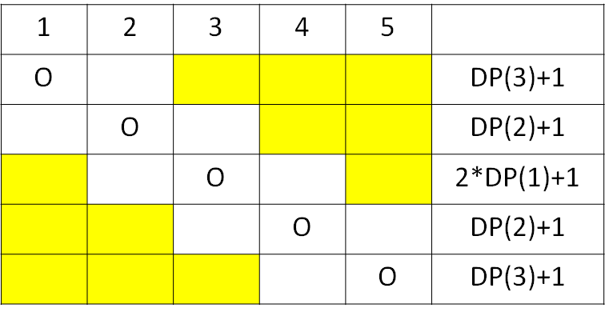

機率 DP
跟機率有關的 DP，包含機率和期望值。
計算機率
AtCoder Educational DP Contest I. Coins
有 枚硬幣， 是奇數。第 枚丟的時候正⾯機率是 ，反⾯機率是 。現在想要⼀次丟這 個硬幣，問有多少機率正⾯的硬幣個數比反⾯的個數還要更多。
- 狀態： 代表前 枚硬幣， 枚正面硬幣， 枚反面硬幣的機率。
- ，最後一個維度可以去除。
- 轉移
- 答案：
計算期望值
落谷 P1291 - 百事世界盃之旅
每瓶飲料上有 名球星的名字，每位球星出線機率相同，平均需要幾瓶飲料才能收集完所有 位球星的名字。
- 狀態： 已收集 位球星的期望值。
- 轉移：
- 買到新的球星：
- 買到重複的球星：
UVa 12730 - Skyrk's Bar
紳士們上小便的時候，彼此之間會隔著 個小便斗 (空著人的小便斗)，請問當有 個一排的小便斗，請問壅塞個數的期望值為何 (一次平均可以多少人上小便)。1
- 狀態：： 個小便斗壅塞個數的期望值。
- 初始狀態：
- 轉移：。
枚舉最後一個人進入的位置 ，期望值為 。

將所有可能狀況加總，可得轉移式 。
當 時，同時只能有 個小便斗使用，這時 。
UVa 10529 - Dumb Bones
要擺放骨牌，放一張骨牌左倒機率為 ，右倒機率為 ，問放 張連續骨牌的期望次數最小為何?
設 為放 張連續骨牌的最小期望次數，枚舉最後一張放骨牌的位置 ，試 次的期望值為 ， 為平均要嘗試的次數。
AtCoder Educational DP Contest J. Sushi
有 個盤子，每個盤子中有 到 個壽司，每次隨機選一盤吃到一個壽司，如果沒壽司就不吃，問把所有壽司吃完花費次數的期望值是多少?
- 狀態： 壽司數量為 的盤子數時，所需次數的期望值。
一種狀態定義為 ，但狀態數太多且不固定在這裡不考慮，在這裡定義 為壽司數量為 的盤子數時，所需次數的期望值，又 ，可以去除一個狀態。
- 轉移：。
把轉移式移項變成 ，算完右式後再除以 即為所求。